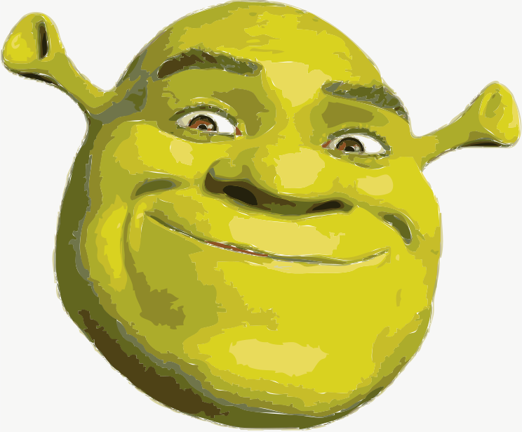

Playing the HTML canvas w P5
Now is the time for all good squid to come to the aid of their waters.
Watch
Play
Race
Custom Maze Options
General Maze Options
Maze Controls
Return to Main Menu
Watch
Play
Race
